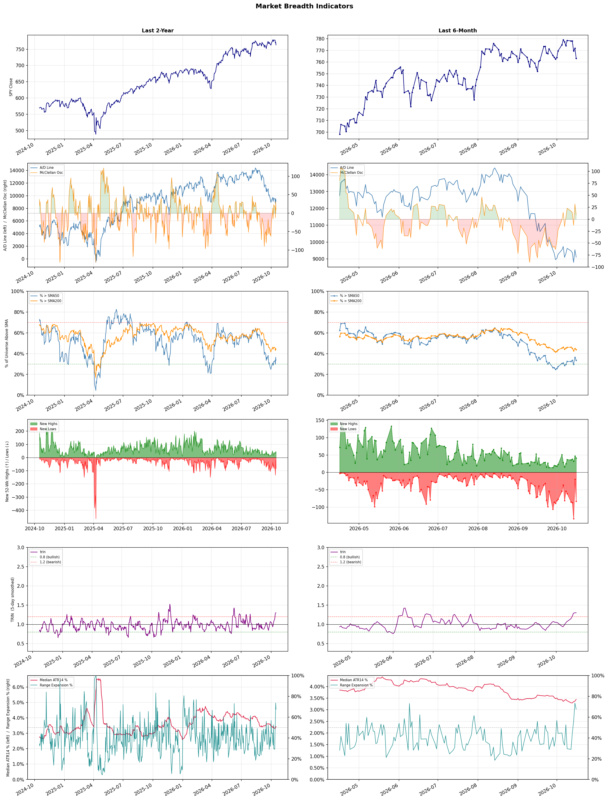

A daily market breadth and sector rotation report for active investors
| Item | Read |
|---|---|
| Regime | Defensive |
| Risk posture | Defensive |
| Universe | 1,315 stocks tracked · 41 new 52-week highs · 30 active swing setups |
| Breadth | only 33.6% of tracked stocks are above SMA50, new lows exceed new highs (83 vs 41) |
| Leadership | Oil & Gas Refining & Marketing, Oil & Gas Integrated, and Household & Personal Products |
| Weakest groups | Uranium, Electrical Equipment & Parts, and Gambling |
Use this report to prioritize research and chart review; validate entries, stops, liquidity, earnings, and risk before acting.
| Item | Read |
|---|---|
| Primary read | Defensive regime with Defensive risk posture. |
| Research queue | MPC, VLO, DINO, PBF, CSAN |
| Leadership focus | Oil & Gas Refining & Marketing, Oil & Gas Integrated, and Household & Personal Products |
| Caution list | Uranium, Electrical Equipment & Parts, and Gambling |
| Review prompt | Check extension risk, chart location, fundamentals, valuation, and earnings before using any research row. |
| Item | Read |
|---|---|
| Primary read | 3 active risk warnings; use screen output as watchlist input only. |
| Bullish screens | KVUE, PG, UL, APLE, DRH |
| Bearish screens | none |
| Alerts / levels | Automated trigger, stop, ATR, liquidity, reward/risk, and event-risk levels are pending future enrichment. |
| Review prompt | Open the linked chart, define trigger and invalidation, then check liquidity and event risk independently. |
Risk Posture: Defensive — screen backdrop favors caution; require independent risk review before new exposure
Metric context: McClellan below -50 = elevated selling pressure; below -100 = washout territory. Range Expansion = share of stocks with daily range above their 20-day average. Signal Density = share of tracked names appearing in signal screens.
| Breadth Date | % > SMA50 | % > SMA200 | New Highs | New Lows | McClellan | Median Range | Avg Range | Median ATR14 | Range Expansion | Signal Density |
|---|---|---|---|---|---|---|---|---|---|---|
| 2026-10-16 | 33.6% | 43.9% | 41 | 83 | 9.6 | 3.7% | 4.6% | 3.4% | 67.6% | 4.7% |

Prior comparison date: October 15, 2026
| Metric | Prior | Current | Change |
|---|---|---|---|
| Regime | Defensive | Defensive | unchanged |
| Risk Posture | Defensive | Defensive | unchanged |
| % > SMA50 | 36.5% | 33.6% | -2.8 pts |
| % > SMA200 | 45.0% | 43.9% | -1.2 pts |
| New Highs | 45 | 41 | -4 |
| New Lows | 20 | 83 | -63 |
Top-10 industries entering: Apparel Manufacturing, Oil & Gas E&P, and REIT - Hotel & Motel. Top-10 industries leaving: Diagnostics & Research, Healthcare Plans, and Software - Application. New multi-signal long setups: ADP, AMT, APLE, BALL, BEKE, CCEP, DG, DRH, IBN, KMI. New multi-signal short setups: none.
| Status | Tickers | Read |
|---|---|---|
| Added | ADP, AMT, APLE, BALL, BEKE, CCEP, DG, DRH | New technical screen matches vs prior report. |
| Removed | A, CHD, CNC, CNK, DOCU, EBAY, ECL, ETSY | No longer present in today's technical screen matches. |
| Still Active | AVTR, BLMN, BOX, CBRL, CI, CME, ED, HALO | Appeared in both current and prior reports. |
| Promoted | KDP | Model Screen Score improved by at least 15 points. |
| Downgraded | none | Model Screen Score declined by at least 15 points. |
| Direction | Industry | ETF | Prior Rank | Current Rank | Days | Rank Change |
|---|---|---|---|---|---|---|
| Rose | Apparel Manufacturing | N/A | 84 | 8 | 35 | +76 |
| Rose | Restaurants | N/A | 78 | 11 | 28 | +67 |
| Rose | Footwear & Accessories | N/A | 88 | 24 | 42 | +64 |
| Rose | REIT - Hotel & Motel | XLRE | 59 | 7 | 28 | +52 |
| Rose | Travel Services | N/A | 78 | 29 | 35 | +49 |
Bull: The Apparel Manufacturing sector is experiencing a rise in relative strength primarily due to favorable industry trends driven by shifting trade dynamics and a resurgence in consumer demand. Recent headlines highlight that trade deals and a strategic shift in sourcing away from China are revitalizing the sector, while expert analyses from sources like Yahoo Finance and The Motley Fool indicate that select textile-apparel stocks are well-positioned for growth as they adapt to these changes and capitalize on emerging market opportunities. This combination of favorable macroeconomic factors and positive investor sentiment suggests a robust outlook for the industry.
Bear: While the apparel manufacturing sector may currently exhibit rising relative strength, this trend could be misleading due to short-term factors such as temporary consumer demand spikes and speculative trading rather than sustainable growth. The ongoing challenges of supply chain disruptions, rising labor costs, and increasing competition from fast fashion brands could undermine long-term profitability. Additionally, the shift away from China may lead to increased costs and logistical complexities that could dampen margins for companies attempting to adapt to new sourcing strategies.
Verdict: The apparel manufacturing sector's current rise is fundamentally driven by favorable trade dynamics and a resurgence in consumer demand, as companies adapt to shifting sourcing strategies away from China and capitalize on emerging market opportunities. However, key risks include potential supply chain disruptions, rising labor costs, and increased competition from fast fashion brands, which could threaten long-term profitability and margin stability. Investors should closely monitor these factors to assess the sustainability of the sector's growth trajectory.
Sources: Google News
Bull: The restaurant industry is likely experiencing a rise in relative strength due to a combination of increasing consumer interest in dining out and the growing popularity of tokenized restaurant stocks, as highlighted by CoinGecko. Despite some short-term volatility in individual stocks like Chipotle and McDonald's, the overall positive sentiment around restaurant ETFs and the potential for strong returns, as noted by The Motley Fool, suggests that investors are recognizing the long-term growth potential in this sector, particularly as dining trends shift and consumer spending rebounds.
Bear: While the bull analyst highlights increasing consumer interest and the appeal of tokenized stocks, the restaurant industry is grappling with significant headwinds, including rising labor costs, supply chain disruptions, and inflationary pressures that are squeezing margins. Additionally, recent headlines about declining stock performance for major players like Chipotle and McDonald's indicate that the market is already pricing in these challenges, suggesting that the current relative strength may be misleading and could reverse as consumer spending tightens in the face of economic uncertainty.
Verdict: The restaurant industry's rising relative strength can be attributed to increased consumer interest in dining out and the allure of tokenized stocks, which are attracting investor attention despite recent volatility in major players. However, the key risk lies in the significant headwinds from rising labor costs, supply chain disruptions, and inflationary pressures that could erode profit margins and dampen consumer spending, potentially reversing the current positive sentiment. Investors should closely monitor these economic indicators and consider diversifying their portfolios to mitigate exposure to these risks.
Sources: Google News
Bull: The Footwear & Accessories industry is experiencing rising relative strength primarily due to positive growth projections and performance benchmarks highlighted in recent analyses, such as the bullish sentiment around stocks like Under Armour and VF Corp. The emphasis on the industry's potential for growth, as noted in articles from The Motley Fool and Yahoo Finance, suggests that consumer demand for footwear and apparel is rebounding, driven by a resurgence in discretionary spending as the economy stabilizes. Additionally, the Q2 results indicate that key players are navigating challenges effectively, positioning themselves well for the next growth phase, which bodes well for the overall sector.
Bear: While the Footwear & Accessories industry may show rising relative strength, the recent performance of key players like Under Armour and VF Corp suggests underlying vulnerabilities, as evidenced by their stock declines despite positive growth projections. The optimism surrounding consumer discretionary spending may be overstated, as economic uncertainties and inflationary pressures could dampen consumer confidence and spending power, potentially leading to a slowdown in demand for non-essential items like footwear and apparel. Furthermore, the competitive landscape remains fierce, with companies struggling to maintain margins amidst rising costs and shifting consumer preferences, which could undermine the projected growth trajectory.
Verdict: The Footwear & Accessories industry is likely experiencing rising relative strength due to a rebound in consumer discretionary spending and effective navigation of challenges by key players, which is reflected in positive growth projections. However, a key risk to this momentum is the potential impact of economic uncertainties and inflationary pressures that could erode consumer confidence and spending power, leading to a slowdown in demand for non-essential items. Investors should monitor economic indicators closely to gauge the sustainability of this growth trend.
Sources: Google News
Bull: The REIT - Hotel & Motel sector is experiencing rising relative strength primarily due to a robust recovery in travel demand, as evidenced by the bullish upgrade for Park Hotels & Resorts driven by strong Revenue Per Available Room (RevPAR) performance. Additionally, positive sentiment around hospitality REITs, highlighted in recent articles from The Motley Fool and Morningstar, suggests that investors are increasingly recognizing the potential for growth in this sector as occupancy rates rebound and operational metrics improve. This favorable outlook is further supported by the performance of key players like Apple Hospitality REIT, indicating a broader trend of recovery and profitability in the hotel industry.
Bear: While the recent uptick in travel demand and RevPAR improvements may suggest a recovery in the hotel sector, several underlying headwinds could undermine this bullish narrative. Rising inflation and interest rates are likely to pressure disposable income and consumer spending, which could dampen travel demand and occupancy rates in the long term. Additionally, the hospitality industry remains vulnerable to economic downturns and potential disruptions from geopolitical tensions or public health crises, which could lead to increased volatility and uncertainty for REITs in this space.
Verdict: The REIT - Hotel & Motel sector is experiencing a bullish trend primarily due to a strong recovery in travel demand and improved operational metrics, as evidenced by rising RevPAR and positive sentiment from analysts. However, investors should remain cautious of key risks, including rising inflation and interest rates, which could negatively impact consumer spending and travel demand, potentially undermining the sector's recovery. It is advisable to monitor economic indicators closely and consider diversifying investments to mitigate exposure to these risks.
Sources: Google News
Bull: The Travel Services sector is experiencing a rise in relative strength due to a robust recovery in consumer demand for travel and tourism, as highlighted by recent articles emphasizing the best travel stocks to watch and investment opportunities through 2026. Key drivers include increasing consumer discretionary spending, a positive outlook on the travel industry's growth, and specific mentions of companies like Expedia Group outperforming the broader consumer cyclical sector, indicating strong performance and investor confidence in travel-related equities. Additionally, the focus on travel and vacation providers in Q2 highlights the sector's resilience and potential for continued growth as travel restrictions ease and consumer sentiment improves.
Bear: While the travel services sector may currently exhibit rising relative strength, this optimism could be misleading given the potential for economic headwinds such as inflation and rising interest rates, which could dampen consumer discretionary spending. Furthermore, the travel industry's recovery is highly susceptible to external factors like geopolitical tensions, potential new COVID-19 variants, and changes in consumer behavior that could lead to a sudden decline in demand, undermining the bullish narrative surrounding stocks like Expedia Group.
Verdict: The travel services sector's rise is fundamentally driven by a significant rebound in consumer demand for travel, supported by increased discretionary spending and a positive growth outlook, particularly for companies like Expedia Group. However, key risks include potential economic headwinds such as inflation and rising interest rates, which could curtail consumer spending, alongside external factors like geopolitical tensions and new COVID-19 variants that may impact travel demand. Investors should remain vigilant about these risks while considering opportunities in the sector.
Sources: Google News
| Direction | Industry | ETF | Prior Rank | Current Rank | Days | Rank Change |
|---|---|---|---|---|---|---|
| Fell | Semiconductor Equipment & Materials | SOXX | 3 | 78 | 14 | -75 |
| Fell | Agricultural Inputs | N/A | 5 | 74 | 42 | -69 |
| Fell | Uranium | URA | 21 | 87 | 42 | -66 |
| Fell | Electronic Components | XLK | 6 | 72 | 14 | -66 |
| Fell | Capital Markets | KCE | 9 | 73 | 42 | -64 |
Bear: While the bull analyst attributes the recent declines in semiconductor equipment stocks to profit-taking after a strong year, this perspective overlooks the fundamental challenges facing the sector. The uncertainty in the chip equipment outlook is not merely a temporary concern; it reflects deeper issues such as potential oversupply in the semiconductor market, slowing demand from key end markets like consumer electronics, and geopolitical tensions that could disrupt supply chains. These factors suggest that the current sell-off may be indicative of a more prolonged downturn rather than a short-term correction.
Bull: The recent decline in relative strength for the Semiconductor Equipment & Materials sector appears to be driven by profit-taking after a strong performance over the past year, as indicated by headlines highlighting significant drops in stocks like Applied Materials and Lam Research. Additionally, uncertainty in the chip equipment outlook, as mentioned in the reports, suggests that investors may be cautious about future growth prospects amid a cooling market, contributing to the sector's recent sell-off.
Verdict: The recent decline in the Semiconductor Equipment & Materials sector is primarily driven by profit-taking following a strong performance, but it is also influenced by deeper concerns about oversupply and slowing demand in key markets, compounded by geopolitical tensions. Investors should remain cautious, as these fundamental challenges could signal a more prolonged downturn rather than a temporary correction, warranting close monitoring of market conditions and potential adjustments to investment strategies.
Sources: Google News
Bear: While the bull analyst highlights potential recovery and strong roadmaps for specific stocks, the overarching trend in the agricultural inputs sector remains concerning due to persistent supply chain disruptions and rising production costs from fertilizer and energy shocks. Additionally, the shift of investor capital towards more economically sensitive sectors could indicate a loss of confidence in agricultural inputs, as these stocks may struggle to maintain profitability in a volatile economic environment, ultimately limiting their growth potential and attractiveness to investors.
Bull: The Agricultural Inputs sector is likely experiencing a decline in relative strength due to recent supply shocks in fertilizer and energy, as highlighted in the Webull article, which may have raised concerns about production costs and margins. Additionally, the broader economic context, where the materials sector is showing signs of a breakout, suggests that investors may be reallocating capital towards more economically sensitive sectors, as indicated by Seeking Alpha and Morningstar, thereby impacting the relative attractiveness of agricultural inputs. However, the potential for recovery is underscored by the positive outlook for specific stocks like Escorts Kubota and Coromandel International, which have strong future roadmaps, suggesting long-term growth potential in the sector.
Verdict: The agricultural inputs sector is facing a decline primarily due to rising production costs driven by supply shocks in fertilizer and energy, which are squeezing margins and investor confidence. While there are positive indicators for certain stocks like Escorts Kubota and Coromandel International, the key risk remains the persistent supply chain disruptions and the potential for continued capital flight to more economically sensitive sectors, which could hinder overall growth and profitability in the agricultural inputs market. Investors should closely monitor these dynamics and consider reallocating capital to sectors with stronger growth prospects while remaining cautious about the volatility in agricultural inputs.
Sources: Google News
Bear: While the bull analyst highlights a potential recovery in uranium stocks due to an oversold bounce, the underlying issues of financial instability and profitability disparities remain significant headwinds. The correction has not only exposed the vulnerabilities of loss-making developers but also raises questions about the sustainability of the entire sector, especially as global energy policies evolve and competition from renewable sources intensifies. Furthermore, dilution events like that of NuScale Power may signal deeper financial troubles, leading to a lack of investor confidence and a prolonged bearish trend in uranium stocks.
Bull: The recent decline in the relative strength of uranium stocks can be attributed to a sector correction that has highlighted the disparity between profitable producers and loss-making developers, as noted in the ChartMill headline. Additionally, the oversold bounce observed in nuclear and uranium stocks indicates that while there is potential for recovery, investor sentiment may be cautious due to concerns about the financial viability of certain companies in the sector, particularly in light of dilution events like that of NuScale Power.
Verdict: The recent decline in uranium stocks is primarily driven by a sector correction that has revealed significant profitability disparities between established producers and struggling developers, raising concerns about financial stability. The key risk from the bear case is that ongoing dilution events and evolving global energy policies may undermine investor confidence and hinder a sustainable recovery, particularly as competition from renewable energy sources intensifies. Investors should closely monitor the financial health of uranium companies and the broader energy landscape to make informed decisions.
Sources: Google News
Bear: While the bull analyst points to sector-wide selling as a temporary issue, the persistent decline in the relative strength of the Electronic Components sector signals deeper, structural challenges that cannot be overlooked. The mixed earnings reports, particularly TTM Technologies' underperformance, suggest a broader trend of weakening demand and profitability pressures that could indicate a prolonged downturn, especially as macroeconomic headwinds like rising interest rates and supply chain disruptions continue to impact the industry. Furthermore, the focus on standout performances like Amphenol may create an illusion of resilience, masking the fact that many companies are struggling to maintain margins in a highly competitive and cost-sensitive environment.
Bull: The recent decline in the relative strength of the Electronic Components sector can be attributed to sector-wide selling pressures, as highlighted by Corning's 5.3% drop amidst broader market volatility. Additionally, mixed earnings reports, such as TTM Technologies underperforming compared to peers and the focus on standout performances like Amphenol, indicate a divergence in company fundamentals that may be causing investor uncertainty and contributing to the sector's weaker relative performance. This backdrop suggests that while some companies are thriving, the overall sentiment in the sector remains cautious, impacting its relative strength against other industries.
Verdict: The recent decline in the Electronic Components sector is primarily driven by mixed earnings reports and sector-wide selling pressures, indicating investor uncertainty about future demand and profitability. The key risk highlighted by the bear thesis is the potential for persistent structural challenges, such as rising interest rates and supply chain disruptions, which could lead to a prolonged downturn for many companies in the industry. Investors should closely monitor these macroeconomic factors and the performance of underperforming companies like TTM Technologies, as they may signal deeper issues within the sector.
Sources: Google News
Bear: While the bull analyst points to potential growth opportunities within the Capital Markets sector, the persistent decline in relative strength and the ongoing tech sell-off suggest deeper systemic issues that cannot be overlooked. The reference to "industry headwinds" from Yahoo Finance raises concerns about not only regulatory challenges but also macroeconomic uncertainties that could further suppress trading activity and investor confidence. Moreover, the broader market's vulnerability to tech sector volatility indicates that any recovery in capital markets may be sluggish and fraught with risk, making it a precarious environment for investment.
Bull: The Capital Markets industry is currently experiencing a decline in relative strength primarily due to the extended sell-off in the tech sector, which has created a ripple effect across broader markets, as highlighted by LancasterOnline. This downturn in tech has likely dampened investor sentiment and confidence, leading to reduced trading volumes and activity in capital markets. Additionally, the mention of "industry headwinds" by Yahoo Finance suggests that external pressures, such as regulatory challenges or economic uncertainties, may also be contributing to the sector's struggles. However, as J.P. Morgan notes, certain sectors are still primed for growth, indicating potential opportunities within Capital Markets for resilient companies.
Verdict: The Capital Markets industry is experiencing a decline primarily due to the prolonged sell-off in the tech sector, which has negatively impacted investor sentiment and trading volumes. Key risks include ongoing regulatory challenges and macroeconomic uncertainties that could further suppress market activity, making it crucial for investors to approach opportunities with caution and focus on resilient sectors that may thrive despite the broader downturn.
Sources: Google News
| Industry | Rank | ETF | 7d | 14d | 28d | 42d | Chg 42d | Size | 20D | 60D | Composite | Active Setups |
|---|---|---|---|---|---|---|---|---|---|---|---|---|
| Oil & Gas Refining & Marketing | 1 | CRAK | 1 | 1 | 1 | 1 | 0 | 7 | 8.2% | 36.1% | 0.977 | 0 |
| Oil & Gas Integrated | 2 | XLE | 6 | 9 | 5 | 7 | +5 | 10 | 8.4% | 16.6% | 0.943 | 0 |
| Household & Personal Products | 3 | XLP | 9 | 24 | 27 | 24 | +21 | 12 | 11.8% | 15.9% | 0.930 | 1 |
| Discount Stores | 4 | XRT | 7 | 15 | 20 | 37 | +33 | 7 | 10.8% | 15.8% | 0.907 | 1 |
| Apparel Retail | 5 | XRT | 12 | 12 | 31 | 38 | +33 | 8 | 11.7% | 14.3% | 0.902 | 0 |
| Oil & Gas E&P | 6 | XOP | 25 | 22 | 34 | 8 | +2 | 26 | 7.0% | 11.8% | 0.880 | 2 |
| REIT - Hotel & Motel | 7 | XLRE | 8 | 10 | 59 | 55 | +48 | 9 | 8.5% | -0.7% | 0.838 | 0 |
| Apparel Manufacturing | 8 | N/A | 26 | 36 | 67 | 77 | +69 | 6 | 16.4% | 11.2% | 0.813 | 0 |
| Financial Data & Stock Exchanges | 9 | N/A | 22 | 45 | 18 | 18 | +9 | 7 | 3.4% | 7.8% | 0.810 | 1 |
| Health Information Services | 10 | N/A | 2 | 4 | 4 | 4 | -6 | 12 | 0.4% | 34.5% | 0.792 | 0 |
Rank columns (7d–42d) show the industry's rank that many trading days ago — lower is stronger. Chg 42d = rank change vs 42 trading days ago — positive means the industry moved up. 20D and 60D are the mean stock return within the industry over that period. Active Setups: count of today's swing-trade candidates from this industry appearing across all signal screens.
| Industry | Rank | ETF | 7d | 14d | 28d | 42d | Chg 42d | Size | 20D | 60D | Composite | Active Setups |
|---|---|---|---|---|---|---|---|---|---|---|---|---|
| Uranium | 87 | URA | 83 | 84 | 79 | 21 | -66 | 6 | -19.6% | -21.5% | 0.025 | 0 |
| Electrical Equipment & Parts | 86 | XLI | 71 | 37 | 49 | 84 | -2 | 12 | -24.1% | -31.3% | 0.035 | 0 |
| Gambling | 85 | N/A | 86 | 86 | 81 | 43 | -42 | 5 | -13.6% | -22.5% | 0.065 | 0 |
| REIT - Mortgage | 84 | N/A | 87 | 85 | 69 | 44 | -40 | 11 | -14.3% | -20.3% | 0.066 | 0 |
| Aerospace & Defense | 83 | ITA | 77 | 58 | 75 | 86 | +3 | 26 | -15.0% | -19.1% | 0.074 | 0 |
| Utilities - Renewable | 82 | N/A | 80 | 57 | 66 | 83 | +1 | 6 | -18.9% | -26.5% | 0.079 | 0 |
| Solar | 81 | TAN | 82 | 74 | 82 | 87 | +6 | 8 | -10.4% | -27.6% | 0.091 | 0 |
| Other Industrial Metals & Mining | 80 | N/A | 79 | 76 | 54 | 45 | -35 | 21 | -18.5% | -15.4% | 0.100 | 0 |
| Resorts & Casinos | 79 | N/A | 85 | 87 | 86 | 85 | +6 | 6 | -9.9% | -21.7% | 0.107 | 0 |
| Semiconductor Equipment & Materials | 78 | SOXX | 14 | 3 | 57 | 80 | +2 | 17 | -11.6% | -17.5% | 0.152 | 0 |
Rank columns (7d–42d) show the industry's rank that many trading days ago — lower is stronger. Chg 42d = rank change vs 42 trading days ago — positive means the industry moved up. 20D and 60D are the mean stock return within the industry over that period. Active Setups: count of today's swing-trade candidates from this industry appearing across all signal screens.
These are research candidates from top-ranked stocks, capped at five names per industry to avoid over-concentration. Returns shown (60D, 120D, 250D) are historical — they reflect where prices have already moved, not forward expectations. Extension Risk flags names that may require extra patience or a better entry point. They are not buy signals.
Chart: TV = TradingView chart (opens in browser); PDF = local chart file (if downloaded).
| Ticker | Name | Industry | Industry Rank | Market Cap | 60D Hist | 120D Hist | 250D Hist | Extension Risk | Research Reason | Chart |
|---|---|---|---|---|---|---|---|---|---|---|
| MPC | Marathon Petroleum | Oil & Gas Refining & Marketing | 1 | N/A | 53.5% | 111.8% | 163.5% | Extended | Top-ranked in industry; extended | TV |
| VLO | Valero Energy | Oil & Gas Refining & Marketing | 1 | N/A | 46.2% | 88.3% | 187.8% | Constructive | Top-ranked in industry | TV |
| DINO | HF Sinclair | Oil & Gas Refining & Marketing | 1 | N/A | 41.5% | 105.4% | 149.5% | Extended | Top-ranked in industry; extended | TV |
| PBF | PBF Energy | Oil & Gas Refining & Marketing | 1 | N/A | 36.9% | 109.5% | 201.8% | Extended | Top-ranked in industry; extended | TV |
| CSAN | Cosan | Oil & Gas Refining & Marketing | 1 | N/A | 9.5% | 9.5% | 9.5% | Constructive | Top-ranked in industry | TV |
| PBR | Petroleo Brasileiro SA Petrobras | Oil & Gas Integrated | 2 | N/A | 40.9% | 28.7% | 133.0% | Constructive | Top-ranked in industry | TV |
| SHEL | Shell | Oil & Gas Integrated | 2 | N/A | 22.3% | 24.9% | 52.4% | Constructive | Top-ranked in industry | TV |
| SU | Suncor Energy | Oil & Gas Integrated | 2 | N/A | 18.3% | 22.6% | 106.5% | Constructive | Top-ranked in industry | TV |
| BP | BP PLC | Oil & Gas Integrated | 2 | N/A | 15.7% | 11.8% | 59.4% | Constructive | Top-ranked in industry | TV |
| XOM | Exxon Mobil | Oil & Gas Integrated | 2 | N/A | 14.8% | 22.4% | 64.1% | Constructive | Top-ranked in industry | TV |
| ELF | e.l.f. Beauty | Household & Personal Products | 3 | N/A | 49.1% | 78.2% | -17.1% | Constructive | Top-ranked in industry | TV |
| ODD | ODDITY Tech | Household & Personal Products | 3 | N/A | 44.4% | 44.2% | -55.9% | Constructive | Top-ranked in industry | TV |
| EL | Estee Lauder | Household & Personal Products | 3 | N/A | 31.3% | 36.2% | 5.2% | Constructive | Top-ranked in industry | TV |
| COTY | Coty Inc | Household & Personal Products | 3 | N/A | 23.1% | 33.3% | -26.3% | Constructive | Top-ranked in industry | TV |
| CHD | Church & Dwight | Household & Personal Products | 3 | N/A | 9.0% | 10.3% | 19.7% | Constructive | Top-ranked in industry | TV |
| OLLI | Ollie's Bargain Outlet | Discount Stores | 4 | N/A | 42.8% | 1.2% | -25.2% | Constructive | Top-ranked in industry | TV |
| BJ | BJ's Wholesale Club Holdings | Discount Stores | 4 | N/A | 12.8% | 10.8% | 9.3% | Constructive | Top-ranked in industry | TV |
| WMT | Walmart | Discount Stores | 4 | N/A | 9.9% | -6.5% | 11.2% | Constructive | Top-ranked in industry | TV |
| COST | Costco | Discount Stores | 4 | N/A | 7.0% | -0.6% | 6.3% | Constructive | Top-ranked in industry | TV |
| DLTR | Dollar Tree | Discount Stores | 4 | N/A | 5.6% | 26.7% | 28.8% | Constructive | Top-ranked in industry | TV |
These are technical screen matches from existing signal files. They are not trade recommendations. Trigger, stop, ATR, liquidity, reward/risk, and event risk still require separate validation until those inputs are available.
Model Screen Score is weighted by signal count, industry rank, freshness, and setup type. It is not a probability of profit, expected return, or suitability rating. Industry cap: max 3 candidates per industry.
Signal glossary: Momentum Pullback = stock in an uptrend that has pulled back 10–30% and shows re-entry conditions. MA Compression = short- and long-term moving averages converging, often preceding a directional move. Three-Day Up/Down = three consecutive closes in the same direction. New 52Wk High/Low = price reached a new annual extreme.
Chart: TV = TradingView chart (opens in browser); PDF = local chart file (if downloaded).
| Ticker | Industry | Setups | Close | Industry Rank | Signal Count | Model Screen Score | Reason | Chart |
|---|---|---|---|---|---|---|---|---|
| KVUE | Household & Personal Products | MA Compression; Three-Day Up | 18.91 | 3 | 2 | 95 | Multi-signal; top industry setup | TV |
| PG | Household & Personal Products | MA Compression; Three-Day Up | 159.35 | 3 | 2 | 95 | Multi-signal; top industry setup | TV |
| UL | Household & Personal Products | MA Compression; Three-Day Up | 66.16 | 3 | 2 | 95 | Multi-signal; top industry setup | TV |
| APLE | REIT - Hotel & Motel | New 52Wk High; Three-Day Up | 17.05 | 7 | 2 | 93 | Multi-signal; top industry breakout | TV |
| DRH | REIT - Hotel & Motel | New 52Wk High; Three-Day Up | 13.42 | 7 | 2 | 93 | Multi-signal; top industry breakout | TV |
| DG | Discount Stores | MA Compression; Three-Day Up | 134.36 | 4 | 2 | 88 | Multi-signal; top industry setup | TV |
| BLMN | Restaurants | Momentum Pullback; Three-Day Up | 9.95 | 11 | 2 | 85 | Multi-signal; pullback setup | TV |
| CBRL | Restaurants | New 52Wk High; Three-Day Up | 68.97 | 11 | 2 | 85 | Multi-signal; new-high strength | TV |
| ADP | Software - Application | New 52Wk High; Three-Day Up | 288.90 | 13 | 2 | 85 | Multi-signal; new-high strength | TV |
| CCEP | Beverages - Non-Alcoholic | New 52Wk High; Three-Day Up | 112.40 | 14 | 2 | 85 | Multi-signal; new-high strength | TV |
| KDP | Beverages - Non-Alcoholic | New 52Wk High; Three-Day Up | 34.62 | 14 | 2 | 85 | Multi-signal; new-high strength | TV |
| CME | Financial Data & Stock Exchanges | MA Compression; Three-Day Up | 293.87 | 9 | 2 | 80 | Multi-signal; top industry setup | TV |
| SPGI | Financial Data & Stock Exchanges | MA Compression; Three-Day Up | 429.64 | 9 | 2 | 80 | Multi-signal; top industry setup | TV |
| AVTR | Medical Instruments & Supplies | New 52Wk High; Three-Day Up | 16.42 | 19 | 2 | 77 | Multi-signal; new-high strength | TV |
| KMI | Oil & Gas Midstream | MA Compression; New 52Wk High | 34.20 | 28 | 2 | 75 | Multi-signal; new-high strength | TV |
| CI | Healthcare Plans | MA Compression; Three-Day Up | 302.30 | 17 | 2 | 72 | Multi-signal; compression setup | TV |
| BOX | Software - Infrastructure | New 52Wk High; Three-Day Up | 39.56 | 26 | 2 | 70 | Multi-signal; new-high strength | TV |
| VTRS | Drug Manufacturers - Specialty & Generic | New 52Wk High; Three-Day Up | 18.66 | 27 | 2 | 70 | Multi-signal; new-high strength | TV |
| IFF | Specialty Chemicals | New 52Wk High; Three-Day Up | 90.68 | 34 | 2 | 70 | Multi-signal; new-high strength | TV |
| SSL | Specialty Chemicals | New 52Wk High; Three-Day Up | 16.34 | 34 | 2 | 70 | Multi-signal; new-high strength | TV |
| MET | Insurance - Life | New 52Wk High; Three-Day Up | 100.76 | 38 | 2 | 70 | Multi-signal; new-high strength | TV |
| HLN | Drug Manufacturers - Specialty & Generic | MA Compression; Three-Day Up | 10.13 | 27 | 2 | 65 | Multi-signal; compression setup | TV |
| ED | Utilities - Regulated Electric | MA Compression; Three-Day Up | 112.26 | 32 | 2 | 65 | Multi-signal; compression setup | TV |
| MA | Credit Services | New 52Wk High; Three-Day Up | 617.42 | 59 | 2 | 65 | Multi-signal; new-high strength | TV |
| V | Credit Services | New 52Wk High; Three-Day Up | 402.61 | 59 | 2 | 65 | Multi-signal; new-high strength | TV |
| IBN | Banks - Regional | MA Compression; Three-Day Up | 29.99 | 44 | 2 | 60 | Multi-signal; compression setup | TV |
| BALL | Packaging & Containers | MA Compression; Three-Day Up | 63.20 | 46 | 2 | 60 | Multi-signal; compression setup | TV |
| BEKE | Real Estate Services | MA Compression; Three-Day Up | 18.07 | 54 | 2 | 60 | Multi-signal; compression setup | TV |
| HALO | Biotechnology | New 52Wk High; Three-Day Up | 121.84 | 61 | 2 | 55 | Multi-signal; new-high strength | TV |
| AMT | REIT - Specialty | MA Compression; Three-Day Up | 185.27 | 66 | 2 | 50 | Multi-signal; compression setup | TV |
How To Use This Report
| Use | Purpose |
|---|---|
| Market map | Start with breadth, regime, risk warnings, and what changed since the prior report. |
| Industry scan | Use leading, deteriorating, rising, and declining industries to focus research. |
| Research queue | Treat long-term candidates as names for deeper fundamental, valuation, and chart review. |
| Technical review | Treat bullish and bearish screen matches as watchlist inputs that require independent trigger, stop, liquidity, and event-risk checks. |
| Source follow-up | Use chart links and source files to verify raw inputs before relying on any row. |
What This Report Is Not
| Not | Meaning |
|---|---|
| Investment advice | The report does not evaluate personal objectives, risk tolerance, tax situation, account type, or suitability. |
| Buy/sell recommendation | Named tickers are research candidates or screen matches, not recommendations to transact. |
| Price target | The report does not provide fair value estimates, targets, or expected returns. |
| Trade plan | Trigger, stop, sizing, reward/risk, liquidity, and event-risk review remain separate user work. |
| Performance claim | Model Screen Score is not validated historical performance or a forecast of future results. |
| Item | Note |
|---|---|
| Version | Daily Report Methodology v1 |
| Model Screen Score | Screen-fit rank based on signal count, industry rank, freshness, and setup type. |
| Not predictive proof | The score is not expected return, probability of profit, historical validation, or suitability analysis. |
| Industry ranks | Composite industry ranks use existing daily ranking outputs and historical rank columns when available. |
| Research candidates | Long-term rows are research candidates from ranked stocks and leading industries, with historical returns labeled as historical only. |
| Technical matches | Bullish and bearish rows are screen matches requiring independent chart, trigger, stop, liquidity, and event-risk review. |
| Source | Status | Rows | Path |
|---|---|---|---|
| Market breadth | present | 1255 | breadth_20261016.csv |
| Industry composite rankings | present | 87 | all_industry_composite_20261016.csv |
| Top ranked stocks | present | 104 | top_ranked_composite_20261016.csv |
| All ranked stocks | present | 1315 | all_stocks_composite_sorted_20261016.csv |
| Top momentum pullbacks | present | 1467 | top_momentum_pullbacks_20261016.csv |
| MA compression | present | 1467 | ma_compression_stocks_20261016.csv |
| Three-day up/down | present | 166 | three_day_up_down_stocks_20261016.csv |
| New 52-week members | present | 124 | breadth_new_52wk_members_20261016.csv |
This report is generated from automated technical screens and is for informational and research purposes only. It is not investment advice, a solicitation, or a recommendation to buy or sell any security. Past performance is not indicative of future results. You are solely responsible for your own investment decisions. Consult a licensed financial advisor before acting on any information herein.